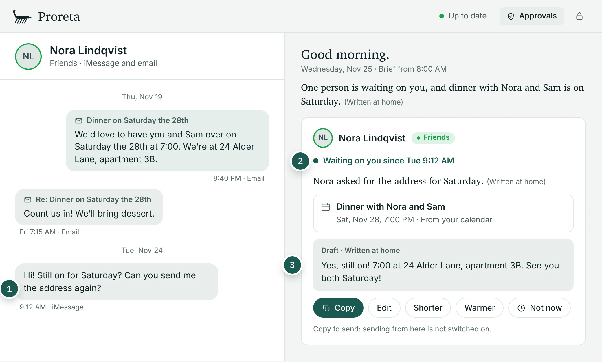
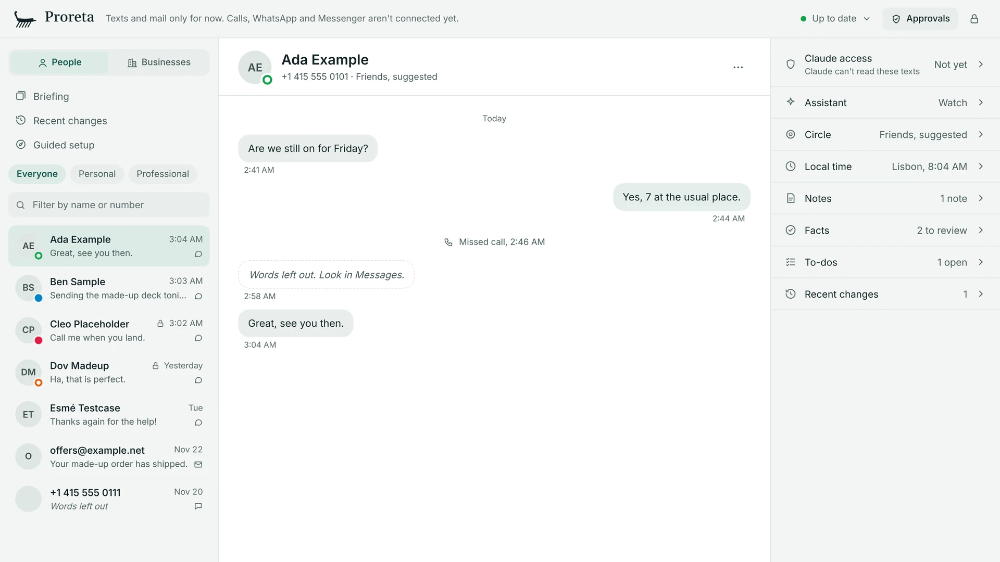

Proreta: Keep up with the people in your life.
Proreta brings texts, email, and calendar context together around each person, helping you remember details, track commitments, and prepare replies.
Being built for open-source, self-hosted use, with AI-guided installation.
Private prototypePublic release planned
See how it works
Nora texts for an address you emailed last week.

Working nowin the prototype todayIn progressbeing built and testedPlannednot built yet
Texts and email in one thread
Nora’s question came by iMessage, and your invitation went by email. Both sit in one thread, because Proreta matched Nora’s phone number and email address to one person.
Working nowWho’s waiting, and what’s coming up
The morning briefing notes that Nora is waiting on you, and finds Saturday’s dinner on your calendar. Even before the briefing arrives, your list of people shows who’s waiting on you, and cards show the coming week’s plans with people you know.
In progressA reply ready for review
A draft written on your own computers, in your own style. Edit it, or ask for it shorter or warmer, then copy it into Messages. Sending from Proreta, with a touch of your YubiKey, is planned.
In progress
See a whole screen of the prototype

What it does
Working nowin the prototype todayIn progressbeing built and testedPlannednot built yet
One view of each person
Texts, email, and plans for each person in one place, organized around the people in your life instead of by app.
Working now
- iMessage and SMS, read by a small helper on your Mac
- Gmail, with read-only access
- Phone numbers and email addresses matched to one person
- Circles: family, close friends, friends, and professional
- Plans from Google Calendar, shown on cards
- Group chats in a list of their own
In progress
- Calls
Planned
- WhatsApp and Messenger
Remember what matters
Proreta keeps track of who’s waiting on you, what’s coming up, and what you know about each person.
Working now
- Who’s waiting on you in one-to-one texts and email, and since when
- Cards worked out at home: overdue replies, the week’s plans, new contacts, and hard news in texts
In progress
- A short briefing each morning
- Notes and facts for each person; facts it picks up wait for your OK
- Catch-up and birthday reminders
Planned
- Reminders you set by asking
Choose how much help you want
For each person, choose Watch to keep track, Remind for reminders, or Draft for reminders with replies to review. Separately, decide whether a cloud AI may read them at all.
Working now
- Watch, Remind, or Draft, set person by person
- Cloud AI access, cleared person by person with your YubiKey
- Reminder cards for people on Remind
In progress
- Replies drafted at home for people on Draft
Planned
- Drafts from the cloud AI for people you’ve cleared
- Sending from Proreta, with a touch of your YubiKey
Setup
Guided installation, step by step
Proreta is meant to be installed with an AI assistant at your side. It explains each step in plain words, runs the checks, and helps when one doesn’t pass. The prototype is installed this way today, one stage at a time; the public installer is planned.
Check your setup
A first check says whether your computers and accounts meet the requirements below, before anything is installed.
Install, and choose privacy settings
Each part installs on its own computer. Along the way you choose how strict to be, such as which people stay on your own computers.
Connect accounts and approve access
Give Gmail and Google Calendar read-only access, let the Mac helper read Messages and Contacts, and register your YubiKey.
Check it works, then meet your people
Built-in checks confirm that every part is reading, nothing was marked as read, and nothing was sent. Then a guided session walks you through the people you message most.
Requirements
What the prototype runs on today. The public release’s requirements aren’t settled yet.
Requiredneeded to run itOptionalonly if you want itProvisionalmay change before release
- A Mac at homeRequired
- iMessage and SMS can only be read on a Mac signed in to your Apple account, so one has to stay on at home. The prototype uses a Mac mini.
- A security keyRequired
- Opening Proreta, and every step on its page that loosens privacy, needs a touch of a security key such as a YubiKey. Two are best, one as a spare.
- A computer for the local AI modelProvisional
- An AI model at home reads each new text once, to spot hard news, plans, and what needs a reply. It will write the briefing and drafts too. The prototype uses a mini PC with 128 GB of memory, shared with its graphics.
- An always-on home serverProvisional
- Stores everything and serves Proreta’s page. The prototype uses a Synology NAS, beside a small mini PC that reads mail and calendars.
- Accounts it reads
- Messages and Contacts on your Mac, and Gmail and Google Calendar with read-only access. It reads only the main calendar of each Google account. Other email and calendar services aren’t supported yet.
- Where you use it
- In a browser on your own computers, on your home network. Use away from home and a phone version are planned.
- A VPNOptional
- Only needed to reach your home computers from elsewhere, for example to install an update while traveling. Proreta itself has no public address.
- A separate networkOptional
- Recommended, not required: Proreta’s computers on their own walled-off part of your home network. The prototype runs this way.
After setup
- UpdatesWorking now
- Each update checks itself before and after it installs, and keeps a way back to the version before.
- BackupsWorking now
- A snapshot of Proreta’s data is taken before every update and kept until the next one passes. Regular backups of your server stay up to you.
- TroubleshootingWorking now
- A status line names anything late: a reader that stopped, a disk filling up, or a certificate near its end. Each install’s checks print plain PASS or FAIL lines that an AI assistant can walk through with you.
- Removing it
- Removing Proreta’s access in your Google account stops all reading of mail and calendars at once. What it kept stays in its folders on your own computers, for you to keep or delete.
Privacy and data flows
What Proreta reads stays on your computers at home.
A cloud AI is optional. It ships switched off, and you decide, person by person, what it may read.
Your accounts
- Messages and Contacts, on your Mac
- Gmail, read-only
- Google Calendar, read-only
read-only
Your computers at home
- Everything is stored here
- A local AI model sorts and summarizes, and will draft replies
- Money, health, and hard news stay home
if you allow
Cloud AI, optional
- Shut until you open it
- Only people you’ve cleared
- Stand-ins for numbers and addresses
How the limits are enforced
Each of these is built into the software, except the last, which is how the prototype is set up.
- Not publicly accessible
- Proreta has no public address. Its page answers only your own computers on your home network, always over HTTPS with certificates made at home, and only after a touch of your YubiKey.
- Read-only access
- It reads Gmail and Google Calendar with Google’s read-only permissions, so it can’t send, change, or delete mail or events. It never asks Google for an event’s description, where meeting passcodes often sit. Unread messages stay unread.
- Money, health, and hard news stay home
- As each message arrives, your own computers check it against fixed lists of money and health words. A match, or a maybe, marks it. Your local AI model also reads each new text and marks any conversation with hard news, such as an illness or a lost job. Only you can clear a mark, at your home server. The rule that decides what may go to a cloud AI refuses anything marked, and it runs where your messages are stored, not in the page.
- The cloud AI connection
- It ships shut, and only you can open it, at your home server: no page or script can. Once it’s open, everything that leaves is logged word for word, and the words are kept for 30 days. The prototype’s cloud AI is Claude, from Anthropic.
- What a cloud AI may receive
- Messages with people you’ve cleared one by one, with phone numbers, email addresses, and street addresses swapped for stand-ins. A message with a number of four or more digits, or one of your code words, is never sent. In the current design, email, group chats, photos, and anything marked stay home.
- A touch of your key
- Opening Proreta, clearing a person for the cloud AI on Proreta’s page, and later sending a message each need a touch of your YubiKey, checked where your messages are stored.
- An emergency stop
- Once sending is on, texting STOP from your own number pauses all sending at once.
- A walled-off networkPrototype setup
- In the prototype, Proreta’s computers sit on their own walled-off part of the home network. The software doesn’t need this; the guide will recommend it.
When the source is published, each of these points will link to the code and documentation behind it. Published code lets you check how Proreta works; it doesn’t prove every claim by itself.
Where it stands
- TodayWorking now
- A private prototype has run at the developer’s home since November 2026, for the developer’s own accounts: texts and email by person, calendar plans, circles, who’s waiting on you, cards for what needs you, the Watch, Remind, and Draft setting, cloud AI access set person by person, and sign-in with a YubiKey.
- NextIn progress
- The morning briefing, notes and facts, calls, catch-up and birthday reminders, and replies drafted at home. Each part is tested on made-up data before it’s installed.
- LaterPlanned
- Opening the cloud AI for people you’ve cleared, sending from Proreta, reminders you set by asking, search, WhatsApp and Messenger, a phone version, and the public installer.
- Source codePlanned
- To be published as open source with the public release.
Want to hear when it’s ready? Write to info@palmulae.com.
Privacy policyTerms of service
Questions: info@palmulae.com
Gmail and Google Calendar are trademarks of Google LLC. YubiKey is a registered trademark of Yubico AB. iMessage, Mac and Mac mini are trademarks of Apple Inc. Claude is a trademark of Anthropic, PBC. WhatsApp and Messenger are trademarks of Meta Platforms, Inc. Synology is a trademark of Synology Inc.